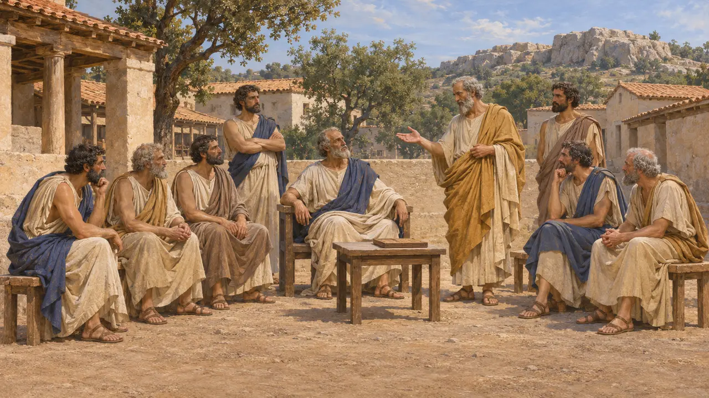
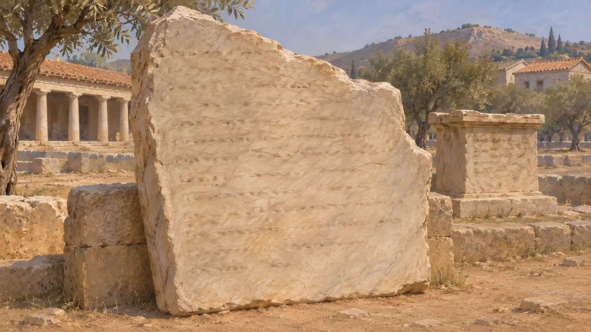
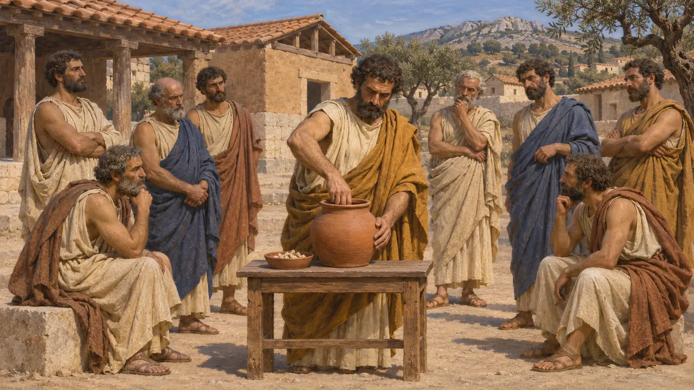
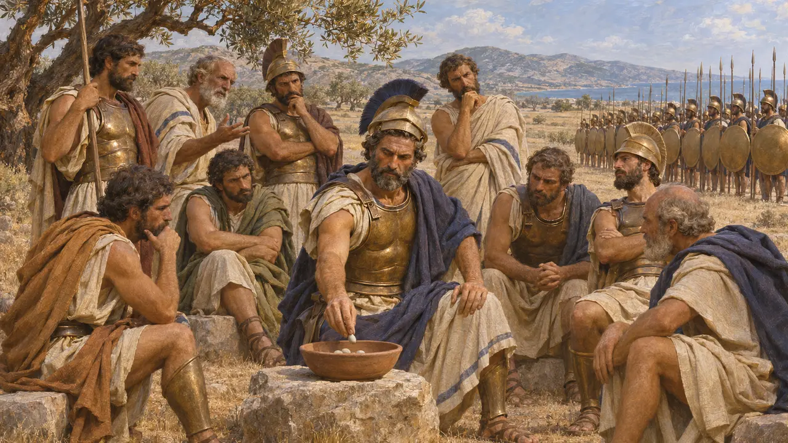
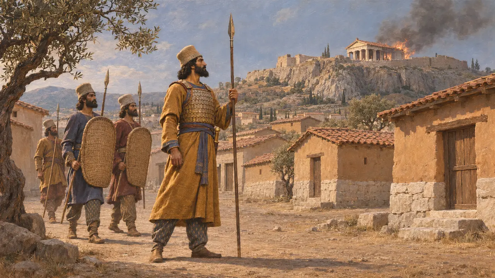

Os arcontes de Atenas
Nove magistrados anuais de Atenas; o principal dava nome ao ano (séculos VI-V AEC)
Os arcontes eram os principais magistrados anuais de Atenas, um colégio de nove homens que ocupavam o cargo por um ano. O arconte principal dava seu nome ao ano, de modo que os atenienses datavam pelo arconte acontecimentos como Maratona e a tomada de sua cidade pelos persas. A mudança nos poderes do cargo acompanha o caminho de Atenas da tirania à democracia nas décadas em que lutou contra a Pérsia.
No jogo: O jogo apresenta os arcontes como os magistrados anuais de Atenas e usa os anos de arcontado para datar os acontecimentos. Historicamente, apenas o arconte principal, ou epônimo, dos nove dava seu nome ao ano.

Nove magistrados por um ano
Relato antigoA Constituição dos Atenienses, escrita na escola de Aristóteles na década de 320, descreve um colégio de nove arcontes com mandato de um ano. O arconte epônimo dava nome ao ano e cuidava das causas de família e herança, o arconte-rei conduzia os ritos ancestrais, o polemarco outrora comandara na guerra e seis tesmótetas tratavam dos processos. Os arcontes aprovados na prestação de contas ingressavam de forma vitalícia no conselho do Areópago.
[Aristotle], Athenaion Politeia 3; 55-59

A lista de arcontes em pedra
Nos registrosUm fragmento de uma lista de arcontes, inscrito por volta de 425 e encontrado na Ágora de Atenas, nomeia sucessivamente Hípias, Clístenes e Milcíades, que os estudiosos datam de 526/5, 525/4 e 524/3. Também sobrevive uma dedicatória no altar de Apolo Pítio, erguida por Pisístrato, filho de Hípias, durante seu arcontado, e Tucídides cita seu texto. As pedras mostram a família do tirano e as principais casas nobres ocupando o cargo.
IG I³ 1031; IG I³ 948; Thucydides 6.54

Da tirania ao sorteio
Relato antigoPelas regras de Sólon, apenas as classes censitárias mais ricas podiam exercer o cargo, e a terceira classe só foi admitida em 457/6. Tucídides diz que os tiranos pisistrátidas mantiveram as antigas leis, mas garantiram que um dos seus sempre ocupasse o cargo. A Constituição dos Atenienses diz que em 487/6 os arcontes passaram a ser sorteados entre candidatos eleitos pelos demos, pela primeira vez desde a tirania. Os historiadores acreditam que o cargo perdeu então importância para os generais eleitos.
Thucydides 6.54; [Aristotle], Athenaion Politeia 7; 22.5; 26.2

Calímaco e o sorteio em Maratona
DisputadoHeródoto diz que o polemarco em Maratona, Calímaco de Afidna, fora escolhido por sorteio, deu o voto decisivo a favor do combate e comandou a ala direita. A Constituição dos Atenienses situa o sorteio dos arcontes em 487/6, depois da batalha. Os historiadores ainda discutem se Heródoto projetou para o passado uma prática posterior e até que ponto o comando cabia ao polemarco, e não aos dez generais.
Herodotus 6.109-111; [Aristotle], Athenaion Politeia 22.5

Datando os anos de guerra pelo arconte
Relato antigoO ano ateniense começava no meio do verão, de modo que cada ano de arcontado abrange dois anos modernos. Heródoto, que raramente usa datas por arcontes, situa a tomada de Atenas por Xerxes no arcontado de Calíades (480/79). A Constituição dos Atenienses coloca Maratona sob Fenipo (490/89). Os escribas persas contavam pelos anos de reinado do Rei, e a cronologia moderna faz os dois sistemas se corresponderem.
Herodotus 8.51; [Aristotle], Athenaion Politeia 22.3
Fontes
- [Aristotle], Athenaion Politeia
- Herodotus 6.109-111; 8.51
- Thucydides 6.54
- IG I³ 1031 (Athenian archon list)
- P. J. Rhodes, A Commentary on the Aristotelian Athenaion Politeia, 1981
- R. Develin, Athenian Officials 684-321 BC, 1989